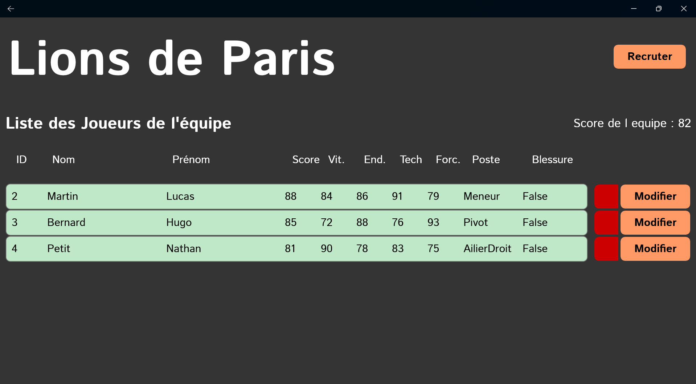
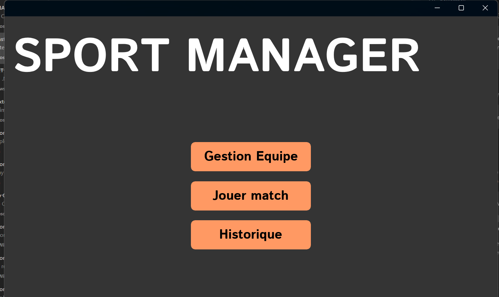
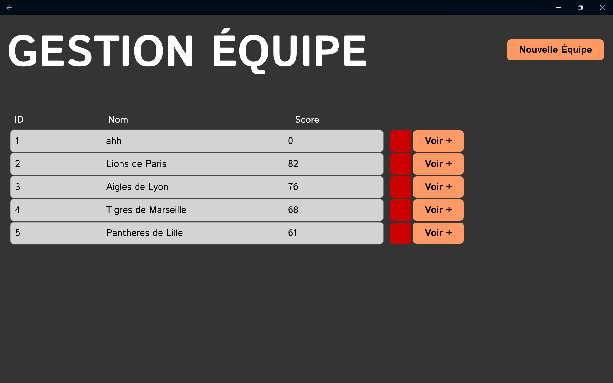
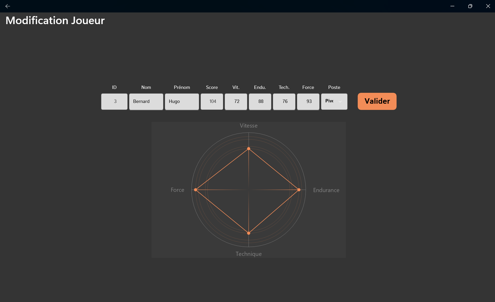

Front-end
HTMLCSSJavaScript
// Étudiant développeur
Bachelor Développeur informatique
CESI Lingolsheim
Passionné par la conception de solutions, je recherche un stage de 4 mois à partir de mai 2027, de préférence dans le secteur privé.
01. À propos de moi
Le développement me plaît pour sa dimension créative : imaginer une solution, la structurer et la rendre réellement utile.
Je suis étudiant en Bachelor Développeur informatique au CESI de Lingolsheim. J'aime découvrir de nouvelles méthodes, rencontrer des personnes aux profils différents et comprendre leur manière de travailler.
Après une première expérience de deux mois à la DISP Strasbourg, je souhaite découvrir le fonctionnement d'une entreprise privée et continuer à développer mes compétences.
02. Compétences
Ce que j'ai déjà mis en pratique dans mes projets.
03. Projets sélectionnés
Deux projets qui montrent ma manière d'apprendre, de structurer une solution et de résoudre un problème.
Python · IA locale · traitement audio
Un outil sans interface graphique capable de lancer un enregistrement audio, de retranscrire la voix localement puis de générer un résumé exploitable de la réunion.
Développer l'ensemble de l'application à partir d'une architecture fournie, en respectant sa séparation en composants et son fonctionnement local.
Automatiser la production d'un compte rendu tout en gardant le traitement audio et l'IA sur la machine.
C# · .NET MAUI · MVVM
Une application de gestion sportive développée en équipe dans le cadre d'un projet de cours.
Gestion des équipes : recrutement, modification et suppression des joueurs.
Conception du calcul de puissance d'une équipe à partir des aptitudes de chaque joueur et de son poste.




Note : openhuman est un fork et n'est pas présenté comme un projet personnel.
04. Parcours
CESI · Lingolsheim
DISP Strasbourg · projet de transcription IA locale
Développement informatique · secteur privé de préférence
05. Contact
Une opportunité de stage, un projet ou simplement une question ? Écrivez-moi directement.